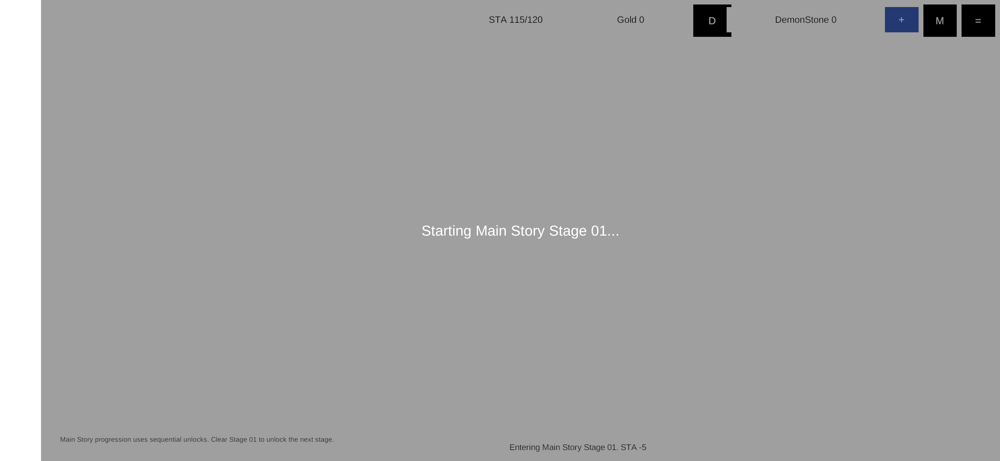
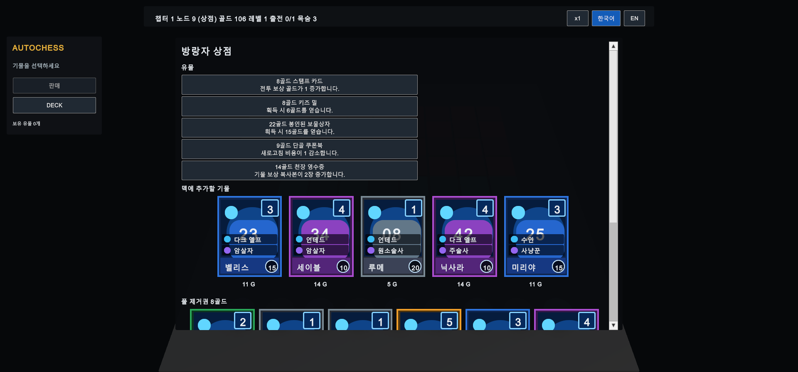

GASHAGAME
Service-backed hybridServer meta · Client-local combat01 / Gameplay Architecture
GASHAGAME
/ VASSALIA
Shared Domain, Diverged Architecture.
GashaGame의 서버 시스템을 먼저 구축한 뒤, 같은 50-unit domain으로 VASSALIA를 만들어 게임플레이 자체를 standalone 환경에서 검증했다.
02 / PROJECT RELATIONSHIP
같은 규칙에서, 다른 제품 경계로.
두 프로젝트는 관련된 gameplay domain을 공유하지만 공통 production source나 Git 계보는 확인되지 않는다. 개발 순서와 검증 목적이 달라지며 state ownership과 runtime architecture도 갈라졌다.
SHARED DOMAIN50 Units · Auto-battler Rules
GashaGame developedServer systems builtGameplay validation needed
VASSALIA
Standalone prototypeLocal run · Deterministic combatRelationship: Related Projects / Shared Domain, Diverged Architecture
03 / SHARED DOMAIN
같은 gameplay vocabulary를 계승했다.
char_001부터 char_050까지의 stable identity와 핵심 규칙이 두 구현을 묶는다.
BOARDBENCHSHOP3-COPY MERGESYNERGYROUTERELIC / EQUIPMENT
View shared unit comparison

Shared Domain ≠ Shared Codebase. 데이터 identity와 규칙은 이어지지만 공통 production library는 확인되지 않았다.
04 / CASE 01 · STATE OWNERSHIP
Authority is a boundary, not a label.
Server와 Local은 우열이 아니라 제품 목적에 맞춘 mutation boundary다. GashaGame은 networked meta와 local combat을 나눴고, VASSALIA는 한 run의 상태를 local aggregate에 모았다.
GashaGame · Split Ownership
Server / Meta
- Account
- Gacha
- Meta Currency
- Formation
- Stage Progression
Unity Client
- Battle Simulation
- Run Gold / Route
VASSALIA · Run Aggregate
DemoRunState
- Units / Gold
- Progression / Lives
- Relics / Equipment
- Rewards / Route
RunRandom → CombatSimulation
한 session의 mutation과 randomness를 명시적인 local owner에 둔다.
SERVER OWNEDAccount · Gacha · Currency · Formation · Progression
CLIENT OWNEDCombat Simulation
INTENTIONAL MVP TRUST BOUNDARYBattle Result → Server
GashaGame은 AInvil을 활용해 실제 server-backed game systems 구현 가능성을 검증한 MVP였다. 현재 서버는 제출된 전투 결과를 replay하지 않고 client result를 신뢰한다.

05 / CASE 02 · DETERMINISTIC GAMEPLAY
속도가 달라도 결과는 같아야 한다.
VASSALIA의 seeded RunRandom은 단순한 테스트 편의가 아니다. 같은 입력이 speed-up 또는 향후 replay에서도 같은 combat result를 만들도록 simulation determinism을 유지한다.
Same Input → Same Result
Input / Encounter
Seeded RunRandom
Combat Simulation
Same Inputs
Same Result
SPEED ×1SPEED ×NREPLAY CONSISTENCY · DESIGNED
현재 repository에는 완성된 replay system이 확인되지 않는다. 구현된 것은 deterministic simulation과 이를 검증하는 고정 seed 검사다.
06 / CASE 03 · AUTHORED ENCOUNTER
Authoring data가 전투가 되기까지.
VASSALIA는 unit, star, equipment, board coordinate를 asset에 기록하고 검증한 뒤 exact combatant seed로 runtime battle에 전달한다.
Authoring → Runtime
EnemyEncounterSO
EncounterSelector
Validation
Combatant Seed
CombatSimulation
Gameplay
UNITSTAR 1–3EQUIPMENT ×3A1–D8
Invalid / Missing / Duplicate→Combat blocked
잘못된 encounter data는 임의의 fallback battle로 조용히 대체되지 않고, combat 전에 content error로 노출된다.
07 / SMALL CASE · ATOMIC ECONOMY
빈자리가 아니라 최종 상태를 먼저 계산했다.
bench가 가득 차도 같은 unit 여러 개를 구매해 즉시 합성할 수 있다면 거래는 가능해야 한다.
BENCH FULL · SHOP [A] [A] [A]
NAIVENo Slot → Reject
ACTUALPlan → Simulate → Validate → CommitA + A + A → Merge → Space Available

GetShopPurchasePlan()이 구매 묶음과 merge 결과를 먼저 simulation하고, 유효할 때만 gold와 unit state를 함께 commit한다.
08 / DEVELOPMENT NOTE
규칙을 함수 책임으로 내린 뒤 구현했다.
AInvil은 이 페이지의 주제가 아니라 제작 방법이다. GDD를 분석해 필요한 함수의 책임과 이름을 먼저 매핑하고 Unity·server 구현과 검증으로 이어갔다.
Design
Requirement
Function Mapping
Implementation
Unity / Server Validation
모든 코드의 생성 주체나 AI 작성 비율, 생산성 배수는 추정하지 않는다.
09 / RESULT
한 도메인, 두 개의 명확한 runtime contract.
동일한 gameplay vocabulary를 유지하면서 server-backed meta architecture, client/server trust boundary, standalone run aggregate, deterministic combat, data-driven content pipeline을 서로 다른 목적에 맞게 설계했다.
50Shared unit identities
20 PASSGashaGame server tests
1 KNOWN DRIFTManifest-version assertion only · gameplay unaffected
30VASSALIA deterministic combats · logged
GashaGame C# · 0 errors·VASSALIA C# · 0 errors

10 / TECHNICAL EVIDENCE
Symbols, boundaries, validation.
View Technical Evidence
Shared Domain
CharacterStatTableDemoContentSeeds
50 IDs / costs / Lineages / Jobs match. 46 display names match.
GashaGame Services
ApiClientGachaServiceFormationServiceStageService
Server pytest: 20 passed / 1 manifest-version assertion failed.
GashaGame Combat Boundary
AutoBattleSimulatorAutoBattleResultSummarySignerstage_service
Client-local simulation; submitted result is persisted without server replay.
VASSALIA Run
DemoRunStateRunRandomUnitPoolState
In-memory run aggregate; deterministic validation log retained.
VASSALIA Encounter
EnemyEncounterSOEncounterSelectorCombatSimulation
Invalid / missing / duplicate data blocks combat before runtime fallback.
Current Validation
DemoValidationRunnervalidate-demo.log
Both C# compiles: 0 errors. Deterministic log and provided runtime captures are retained; fresh Play Mode validation remains separate.